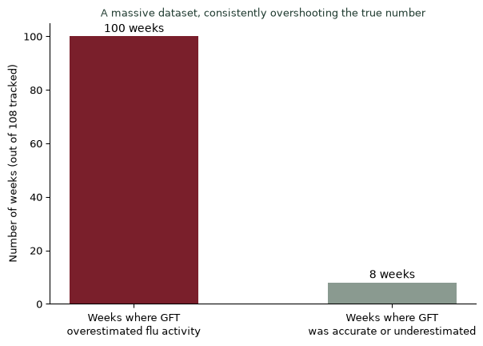
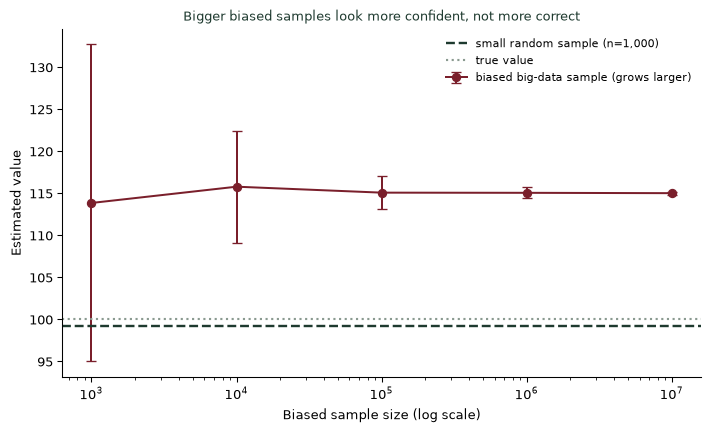

(표본은 어떻게 전체를 말하는가) 빅데이터가 대표성 문제를 해결하지 못하는 이유 — 많다고 대표성이 생기진 않는다
통계기초
표본조사
2008년 구글은 검색어만으로 독감 유행을 CDC보다 빠르게 예측한다며 주목받았다. 그런데 2013년, 구글 독감 트렌드는 실제 유행 규모를 거의 두 배 가까이 과대 예측했다. 수억 건의 검색 데이터로도 풀지 못한 문제가, 작지만 제대로 설계된 표본에는 없었던 이유를 짚어본다.
수억 건의 검색어로 독감을 예측하다
2008년 구글은 ’구글 독감 트렌드(Google Flu Trends)’라는 서비스를 선보였다. 사람들이 “독감 증상”, “해열제” 같은 검색어를 입력하는 패턴을 분석해, 미국 질병통제예방센터(CDC)보다 1~2주 빠르게 독감 유행 시기를 예측할 수 있다는 것이었다. 데이터의 규모는 압도적이었다. 매주 수억 건에 달하는 검색어 데이터를 실시간으로 분석했으니, 전통적인 설문조사나 병원 보고 체계와는 비교할 수 없이 “큰” 데이터였다.
그런데 두 배 가까이 틀렸다
이 서비스는 2009년 신종플루(H1N1)의 세계적 유행을 제때 포착하지 못했고, 2013년 겨울에는 실제 독감 유행 규모를 거의 두 배 가까이 과대 예측하는 오류를 범했다. 후속 연구에 따르면 2011~2013년 사이 108주 가운데 100주 동안 독감 유행을 과대 예측했다. 원인 중 하나로 꼽힌 것은, 언론이 특정 지역의 독감 경보를 크게 보도하면서 실제로는 독감에 걸리지 않은 사람들까지 관련 검색어를 입력하는 일이 크게 늘었다는 점이다. 결국 네이처(Nature)지는 이 서비스가 기존의 역학조사 체계를 대체할 수 없다고 비판했고, 구글은 이 서비스를 종료했다.
왜 데이터가 커도 대표성은 저절로 생기지 않을까
검색 데이터가 아무리 방대해도, 그 데이터는 애초에 “독감에 걸린 사람”을 대표하도록 설계된 것이 아니라 “구글에 특정 단어를 검색한 사람”을 모은 것이다. 독감 증상이 있어서 검색한 사람과, 뉴스를 보고 불안해서 검색한 사람을 데이터만으로는 구별할 수 없었다. 통계학자 샤오리 멍(Xiao-Li Meng)은 이런 현상을 “빅데이터의 역설”이라 부르며, 데이터의 양이 아무리 늘어도 표본이 편향되어 있으면 추정의 신뢰도는 거의 개선되지 않는다는 것을 수학적으로 보였다. 표본 크기를 \(n\), 모집단 크기를 \(N\)이라 할 때, 추정의 오차는 표본과 모집단 사이의 상관관계(데이터 품질 결함)에 의해 지배되고, 이 상관관계가 조금이라도 있으면 \(n\)이 커질수록 오히려 겉보기에만 더 “확신에 찬” 틀린 답을 내놓을 수 있다.

편향된 빅데이터 표본은 크기가 커질수록 추정값들이 서로 가까이 모이지만(오차막대가 줄어들지만), 그 중심은 참값에서 계속 벗어나 있다. 반면 작지만 무작위로 뽑힌 표본은 애초에 참값 근처에 있다. “확신에 차 보이는 것”과 “맞는 것”은 다르다.
빅데이터를 마주할 때 확인할 것
- 데이터가 원래 무엇을 측정하려고 모인 것인지 물어라. 검색어는 “독감 환자”가 아니라 “검색한 사람”을 측정한다.
- 데이터의 양과 대표성을 분리해서 평가하라. 양이 많다고 대표성이 자동으로 따라오지 않는다.
- 작은 공식 통계와 대조해보라. 전통적인 역학조사나 설문조사가 작아도 더 정확할 수 있다.
- “더 많은 데이터”보다 “더 적절한 데이터”를 우선하라. 빅데이터는 전통적 통계를 보완하는 도구이지, 대체하는 마법이 아니다.
더 깊이: 확률표본이 활용되는 이유
강의노트 〈수리통계학 4. 표본분포 — 확률표본 활용〉은 확률표본이 모집단에 대한 타당한 추론을 가능하게 하는 근거를 설명한다. 구글 독감 트렌드의 검색어 데이터는 양은 거대했지만, 애초에 “확률표본”이 아니었다 — 모집단(독감에 걸릴 수 있는 모든 사람)에서 알려진 확률로 뽑힌 것이 아니라, 검색이라는 행동을 보인 사람들만 자기선택적으로 모인 데이터였다. 확률표본의 정의를 만족하지 못하면, 아무리 커도 추론의 근거로 삼기 어렵다.
SDV 관점: 데이터의 양보다 수집 설계가 가치를 결정한다
빅데이터의 대표성 문제를 이해하는 일은 통계적 학습(3단계)으로 넘어가기 전에 반드시 점검해야 할 요약과 추론(1~2단계)의 전제조건이며, SDV(통계적 데이터 가치화) 관점에서는 AI·빅데이터 시대에 통계학자가 할 가장 중요한 역할 중 하나다. 데이터가 넘쳐나는 시대일수록, “이 데이터가 양이 많다”는 사실과 “이 데이터가 내가 알고 싶은 것을 대표한다”는 사실을 혼동하기 쉽다. 데이터에 가치를 더하는 통계학자는 모델을 더 복잡하게 만들기 전에, 그 데이터가 애초에 올바른 질문에 답할 자격이 있는지부터 검증한다. (SDV(데이터 가치화))
결론: 많다고 믿지 말고, 대표하는지를 물어라
나는 학생들에게 “데이터가 몇 건이다”라는 말을 들으면 감탄하기 전에 “그 데이터가 누구를, 어떻게 모은 것인가”를 먼저 물으라고 말한다. 구글 독감 트렌드는 수억 건의 데이터로도 풀지 못한 문제를, 전통적인 역학조사는 훨씬 적은 데이터로 더 안정적으로 다뤘다. 양은 질을 대신하지 못한다.
참고 자료
- 구글 독감 트렌드의 2013년 과대 예측(약 2배)과 108주 중 100주 과대 예측 분석은 Lazer 외(2014) “The Parable of Google Flu”에 관한 보도를 참고했다: 네이처 “구글 ‘독감 트렌드’ 맹신 말라” — 블로터
- 샤오리 멍(Xiao-Li Meng)의 “빅데이터 역설”은 통계학 문헌에서 널리 인용되는 개념이다.
- 두 번째 그림의 구체적인 수치는 빅데이터 역설의 작동 방식을 보여주기 위한 가상의 시뮬레이션이다.